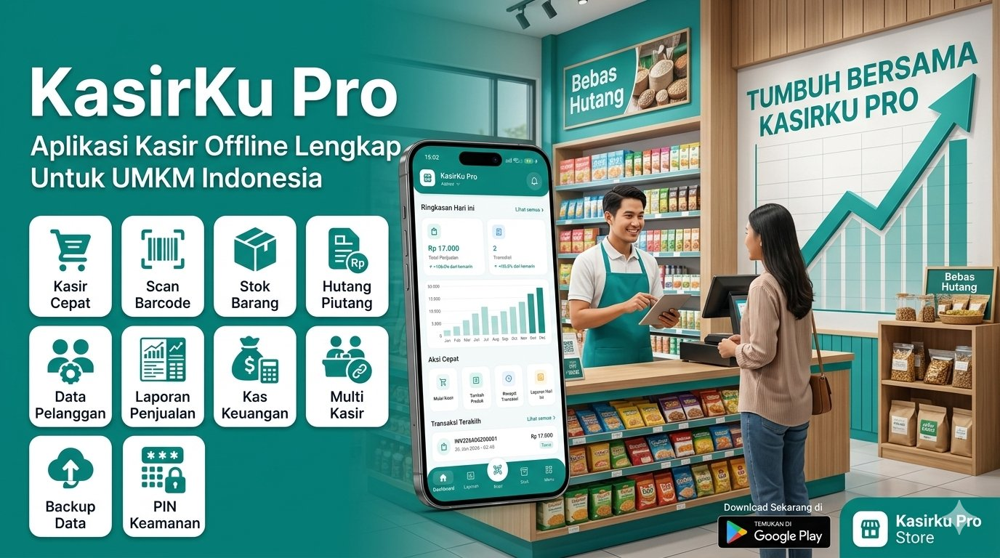
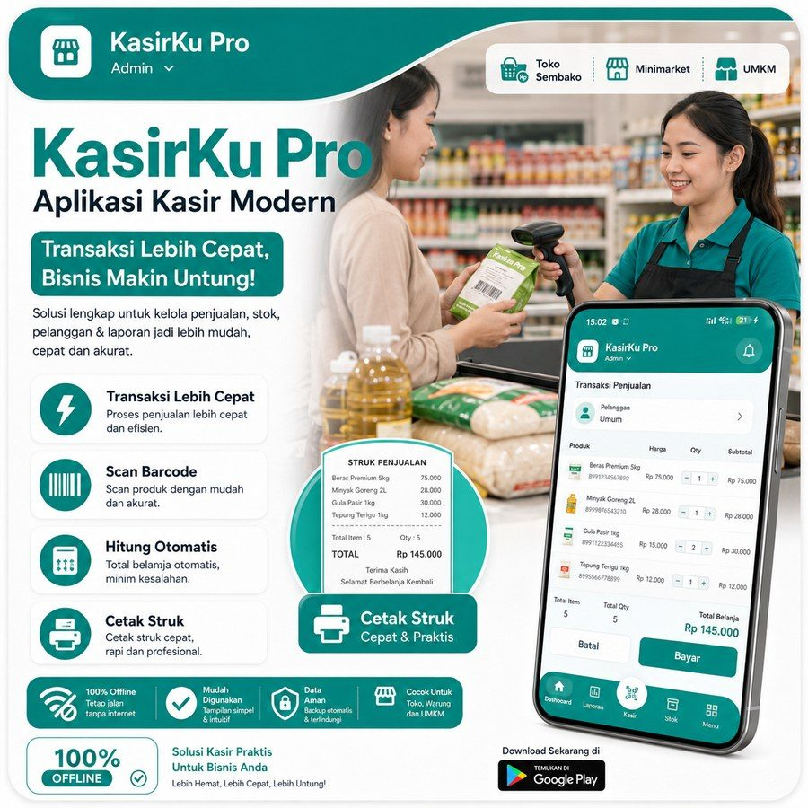
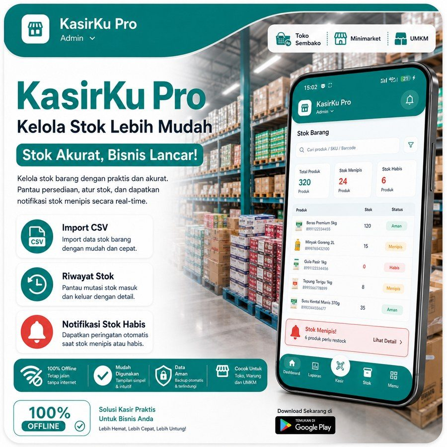
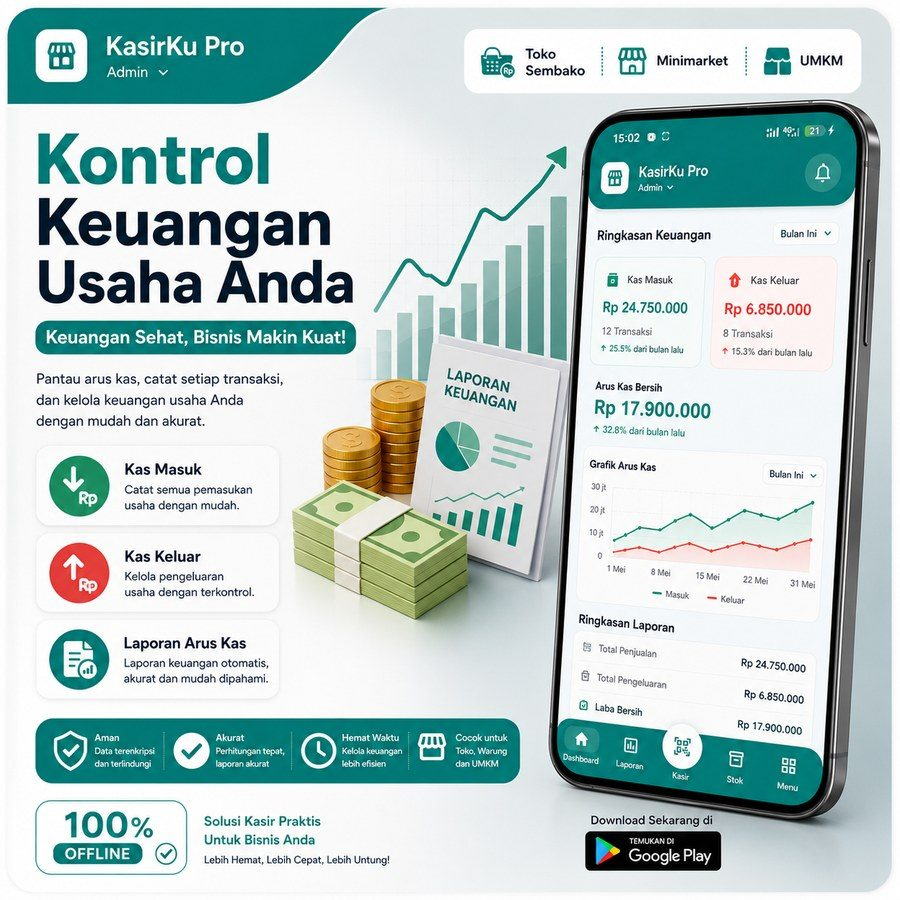
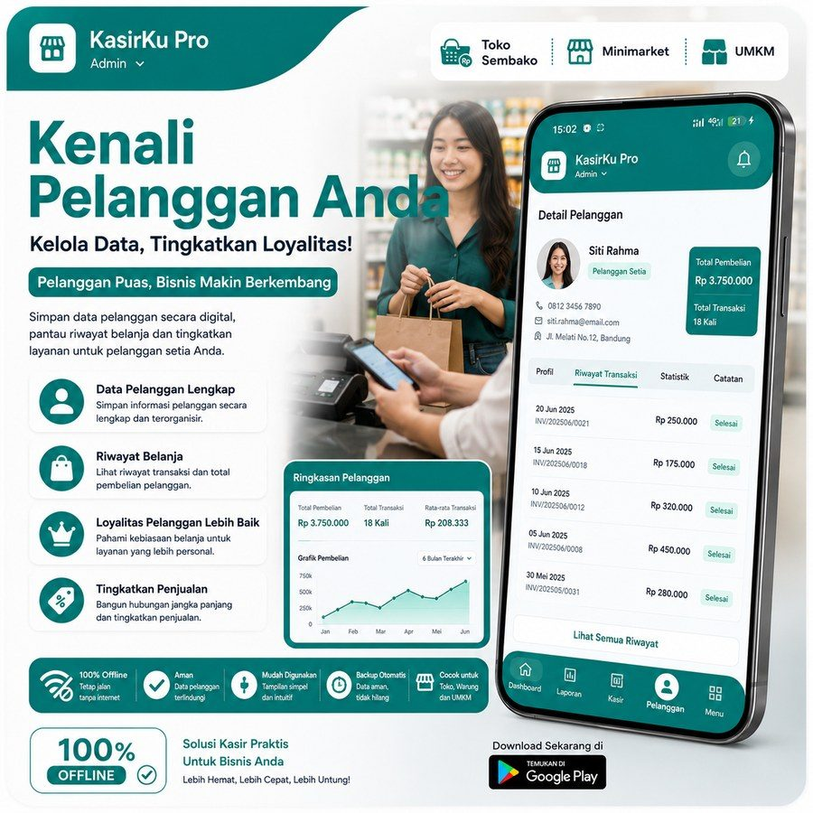
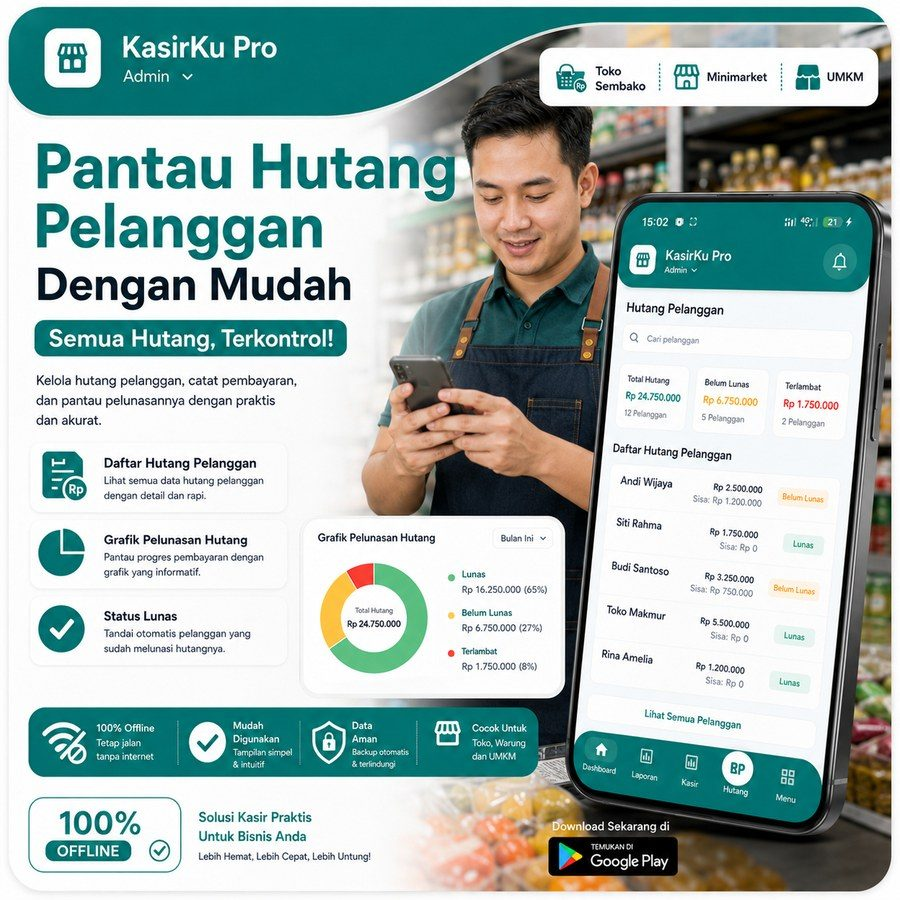
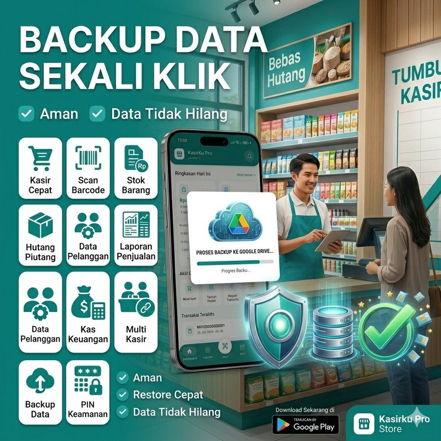
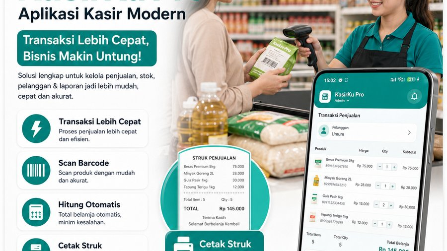
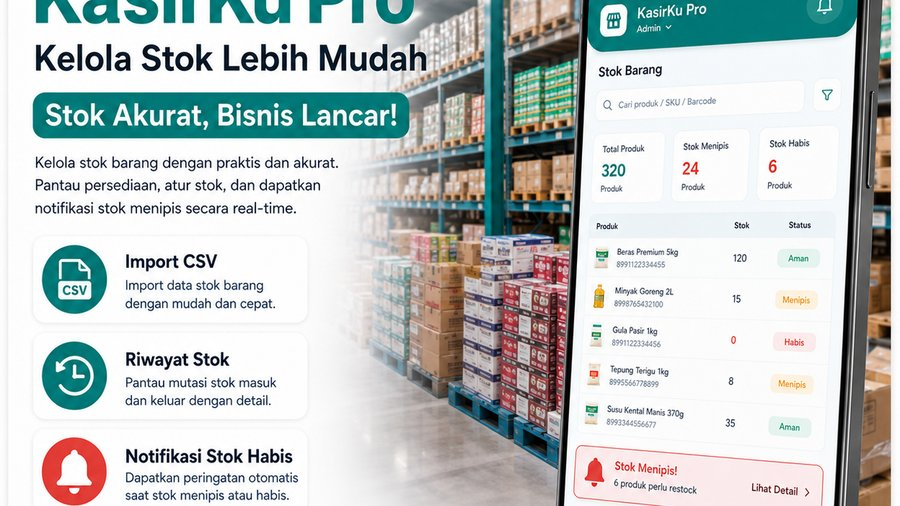
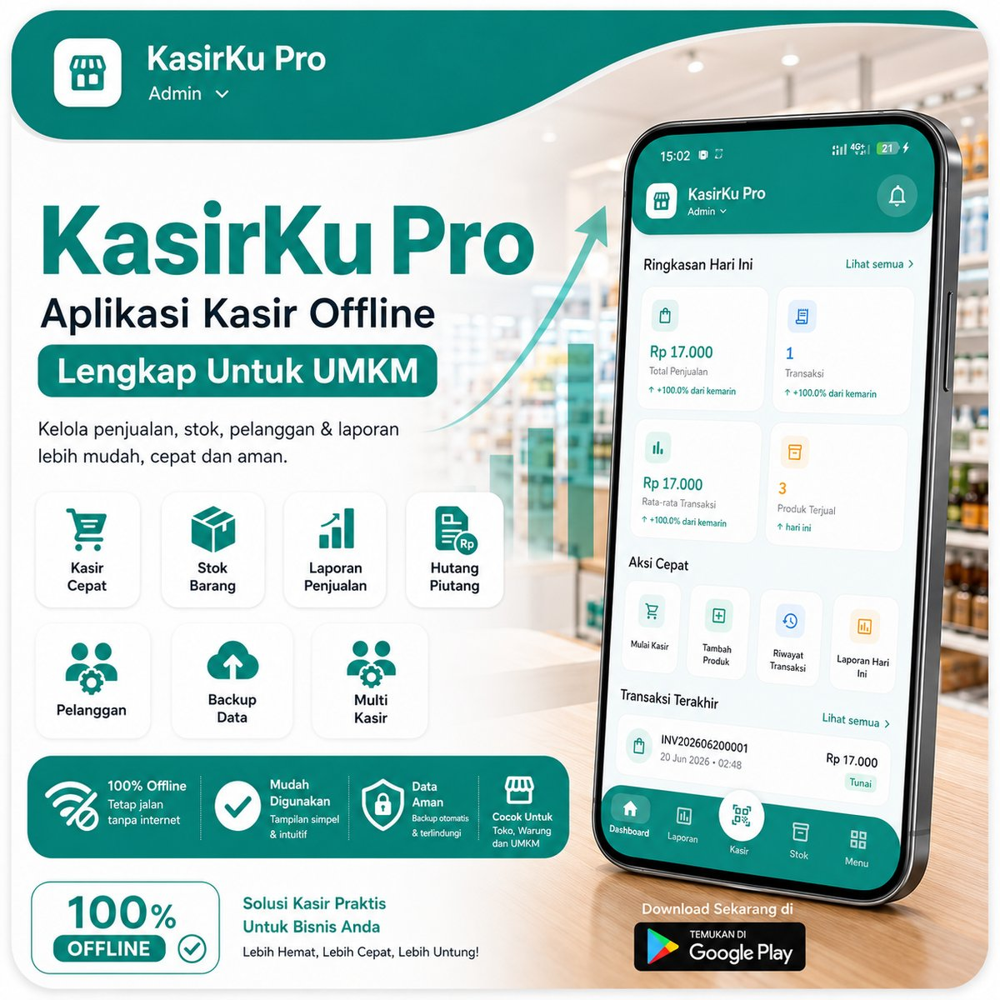

Panduan Kasir
Cara Menggunakan Fitur Kasir untuk Transaksi Lebih Cepat
Pelajari cara memaksimalkan fitur scan barcode, tombol cepat, dan cetak struk untuk mempercepat proses penjualan di toko Anda.
KasirKu Pro adalah aplikasi kasir offline lengkap untuk toko sembako, warung, dan UMKM Indonesia. Kelola penjualan, stok, pelanggan & laporan — tanpa internet sekalipun.

Dari kasir harian hingga laporan keuangan — semuanya ada di satu aplikasi yang ringan dan mudah dipakai.






Dirancang khusus untuk pelaku UMKM Indonesia — simpel, cepat, dan tidak memerlukan koneksi internet.
Tonton demo singkat bagaimana KasirkuPro membantu proses kasir jadi lebih cepat dan mudah.
Ribuan pelaku UMKM sudah merasakan manfaat KasirkuPro setiap harinya.
"Aplikasi ini luar biasa! Sejak pakai KasirkuPro, proses kasir di warung saya jadi 3x lebih cepat. Laporan harian langsung bisa dilihat tanpa repot hitung manual lagi."
"Fitur hutang piutangnya sangat membantu! Saya tidak perlu lagi catat manual di buku. Semua hutang pelanggan terpantau dan ada notifikasi jatuh tempo. Keren banget!"
"Saya paling suka fitur backup Google Drive-nya. Pernah HP hilang, tapi data toko saya aman semua. Restore cuma beberapa menit. Tenang banget pakai aplikasi ini!"
"Tampilan yang simpel tapi lengkap. Kasir saya yang tidak melek teknologi pun bisa langsung pakai tanpa pelatihan panjang. Multi kasir-nya juga sangat berguna untuk kelola shift!"
"100% offline itu yang paling penting buat saya. Lokasi toko sering sinyal lemah, tapi KasirkuPro tetap jalan lancar. Laporan bulanan juga akurat dan mudah dibaca. Recommended!"
Gratis selamanya. Tidak perlu kartu kredit. Langsung bisa dipakai.
Tersedia untuk Android 6.0+ • Gratis • File dihosting di Google Drive
Pelajari cara memaksimalkan setiap fitur KasirkuPro untuk bisnis yang lebih efisien.



KasirkuPro adalah aplikasi kasir indie yang dikembangkan secara independen dengan fokus pada kemudahan penggunaan untuk pelaku usaha kecil di Indonesia.
Aplikasi ini dibangun dengan teknologi Flutter yang memungkinkan performa tinggi, mode offline penuh, dan kompatibilitas luas di berbagai perangkat Android.
Terus berkembang berdasarkan masukan pengguna — setiap update membawa fitur baru yang benar-benar dibutuhkan oleh pemilik UMKM.

KasirkuPro dikembangkan dengan ❤️ untuk membantu UMKM Indonesia. Jika aplikasi ini bermanfaat dan kamu ingin mendukung pengembangan, secangkir kopi sangat berarti bagi saya ☕